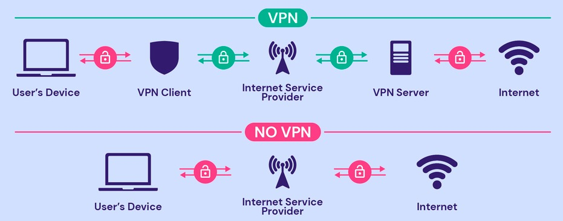

Updated ( 2020-02-20 / 2024-01-11 )
- if network packets have nowhere to go they will be dropped by the device
- in general when we are talking about NAT (Network Address Translation) we are talking about PAT (Port Address Translation)
- private address to public address mapping (implements NAT/PAT)
- (on a switch) switch port to MAC addresses mapping (dynamically updated with ARP requests)
- MAC address to IP address mapping (OSI Layer 2 to Layer 3 mapping)
- through ARP requests host discover each other on the network (OSI Layer 2 hop-to-hop transmission) (the ARP table updated dynamically)
- NAT (Network Address Translation) is basically mapping IP Addresses (routing the traffic by modifying IP addresses on the Router)
- NAT was invernted in order to increase the number of IP address space
- Static NAT:
- we statically map a private IP to a public IP
- allows bidirectional traffic (so the server is reachable from the public network)
- Dinamic NAT:
- we dynamically map private IP addresses to a pool of public IP addresses
- allows unidirectional traffic
- number of connection at a time is limited by the public IP address pool size
- PAT (Port Address Translation) or NAT overload:
- multiple private IPs are mapped to a signle public IP address but with different port number (most common)
- mostly used for unidirectional traffic, but also can be assigned statically therefore supports bidirectional traffic
- Internet is basically a bunch or routers connectecd togehter (in hierarchy), there are 3 ways routers can be connected:
Direct Connection: NIC directly connected (automatically discovers the connected other router)
Static Routing: Administrator statically configure routes
Dynamic Routing: Routers dynamically create routes between each other (try to chose the most optimal route)
- it's a technique to create one route summary that represent multiple network/subnets (also called route aggregation)
- it's a very useful technique because routers are placed in hierarchy on the internet (ex: 0.0.0.0/0 default route -> all traffic is forwarded here)

TCP (Transmission Control Protocol):
- connection oriented (point-to-point), estabilishes a connection between pairs (the sender send some message then the receiver acknowledges the received message)
- reliable because the receiver acknowledges the received messages in the correct order, but slower than UDP (becasue of the acknowledge messages)
- has flow control -> monitors the bandwidth in order to adjust the optimal transmission speed in order to not to lose packets on the wire
UDP (User Datagram Protocol):
- not connection oriented, the sender sends some message to a destination and then don't care (Fire and Forget)
- faster than TCP but unreliable because the sent messages can be lost without any error feedback (has no receiver acknowledgement)
- has no flow control -> uses the full bandwith to send datagrams

- a service that basically acts as a client for you with several security benefits:
- creates a secure tunnel between your device and the VPN service (so you're not directly connected to the target site but to the VPN, this creates a secure tunnel so your ISP (or anyone in between) cannot see your requested sites)
- the VPM hides your public IP, so sites cannot see who you are (they see the VPN's public IP instead)
